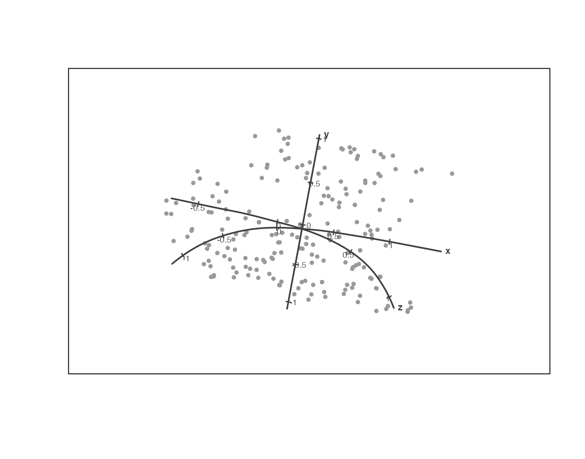
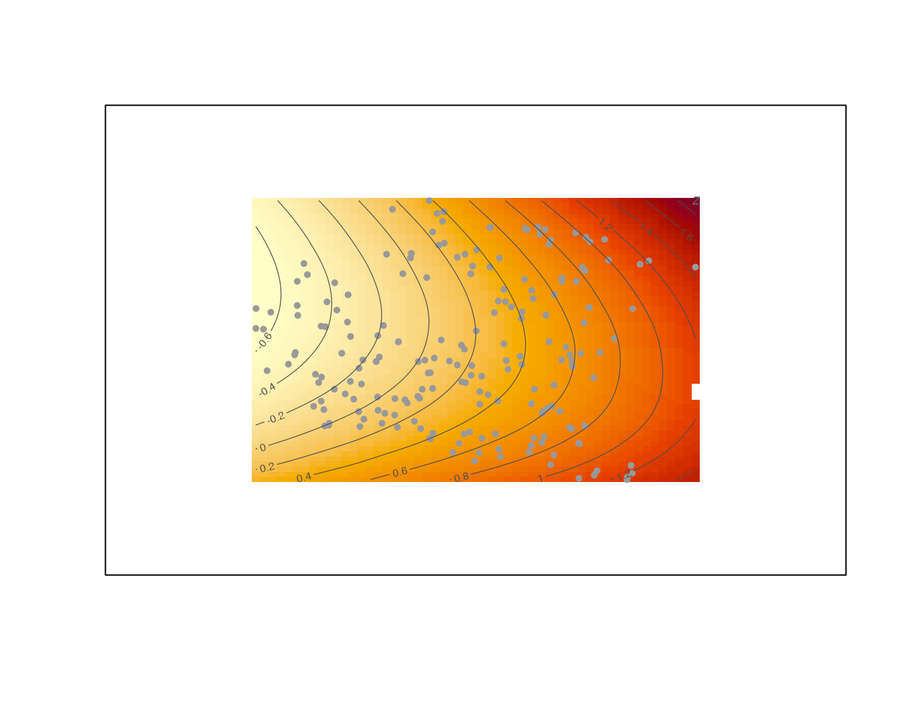
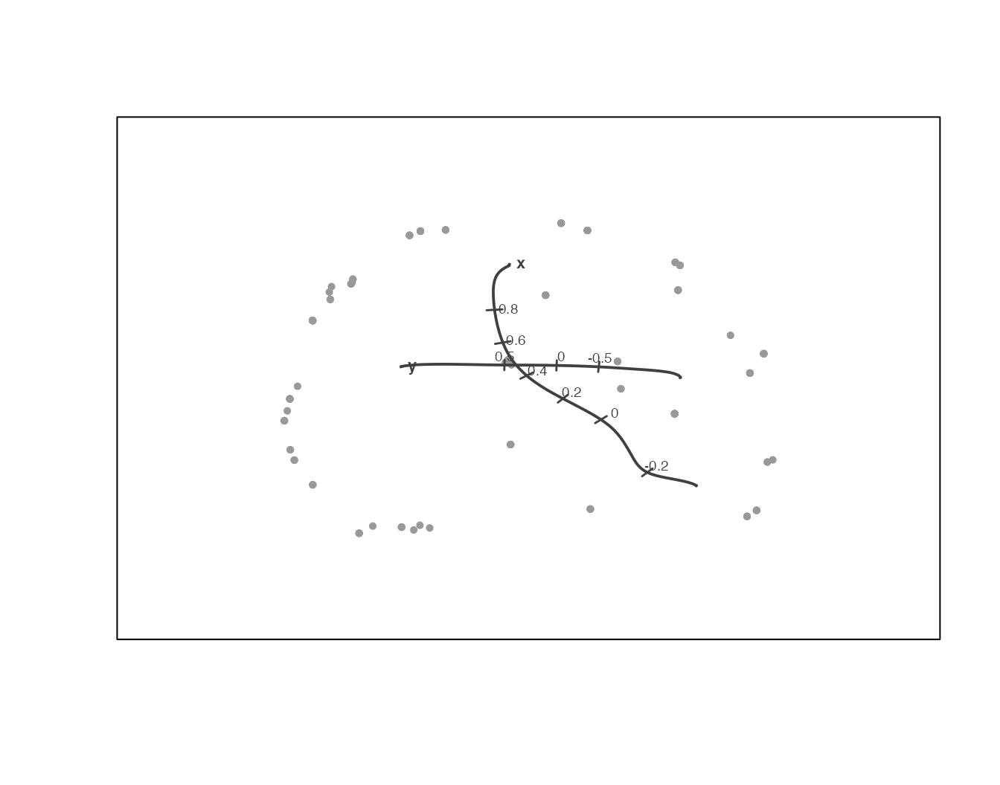
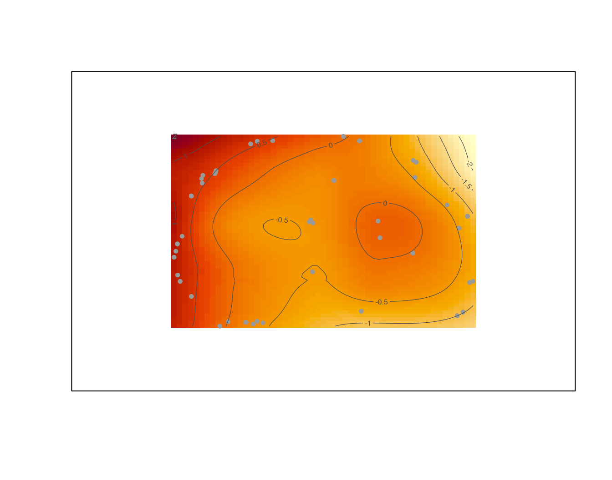
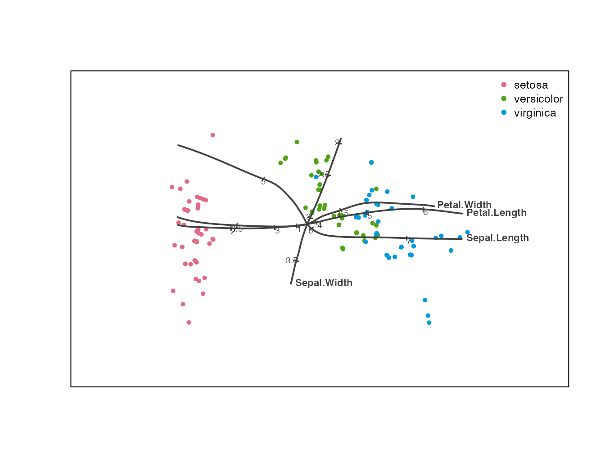
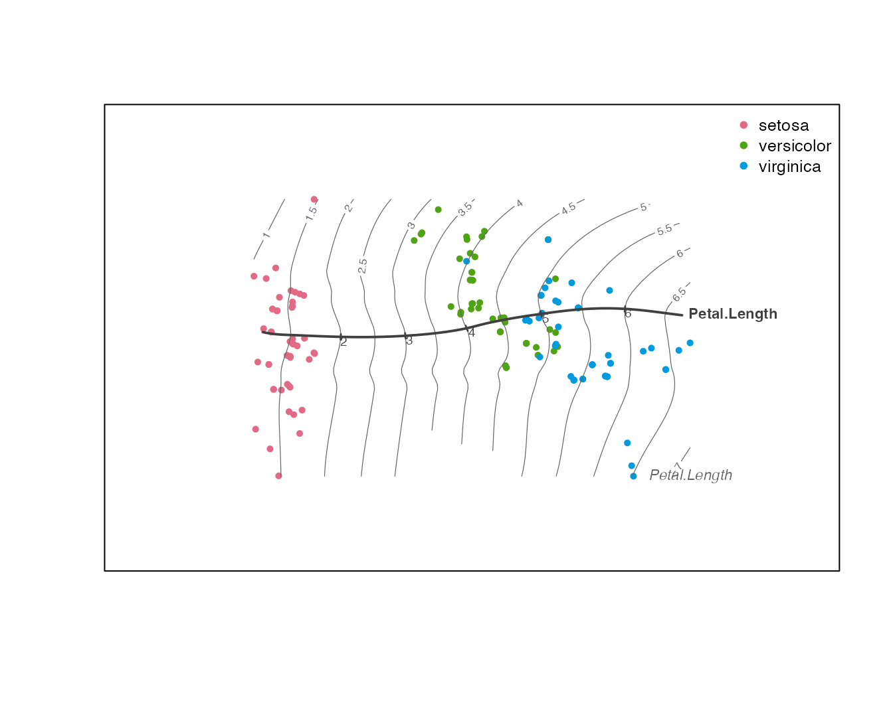
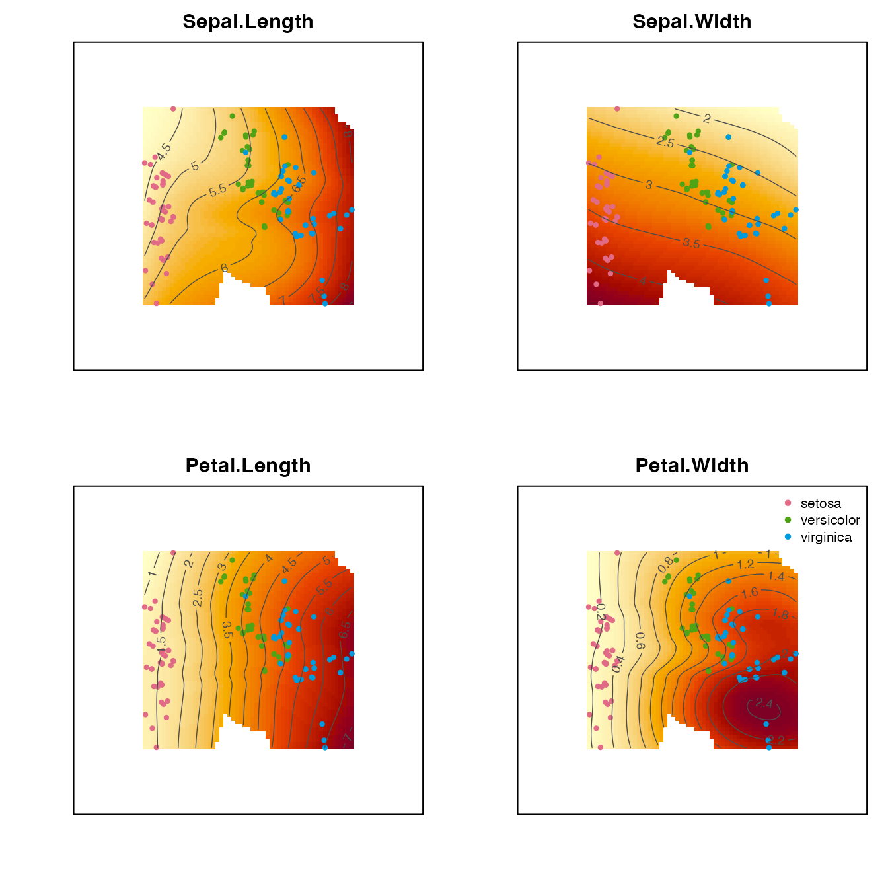
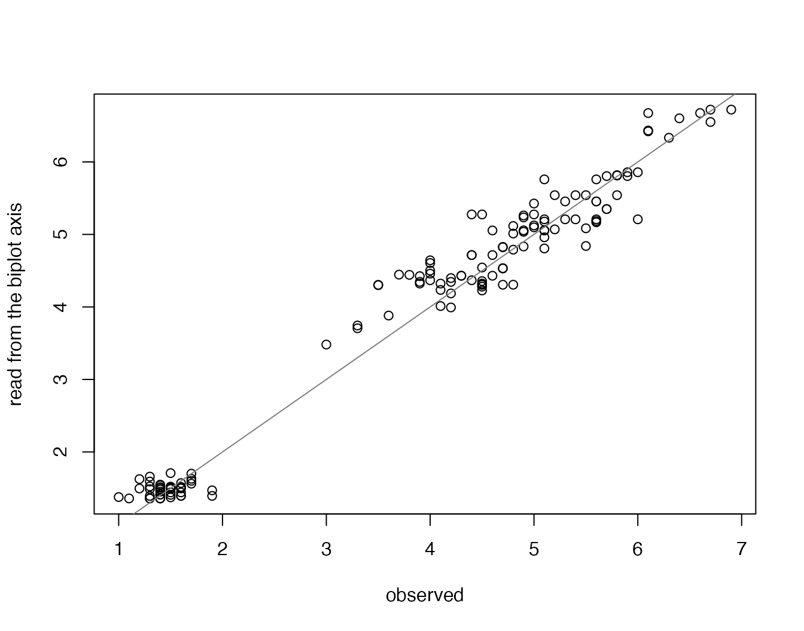

prinsurf
prinsurf.RmdA principal surface (Hastie and Stuetzle, 1989) is a smooth two-dimensional manifold fitted through the middle of a -dimensional point cloud, estimated by alternating an expectation step (the coordinate functions are loess smooths of each variable on the surface coordinates) and a projection step (each sample is projected onto its nearest point of the current surface). Where a principal component analysis flattens the data onto the best-fitting plane, a principal surface is allowed to bend, so it recovers curved structure that a plane must smear out.
The display problem is that a curved surface has no linear biplot axes. This package supplies the missing reading rules. Each variable’s fitted values over the surface form a smooth scalar field; the gradient-flow axis for a variable is the steepest-ascent trajectory of that field, started from the centre of the samples. It crosses the variable’s contours orthogonally, carries a monotone calibration in the variable’s original units, and is read exactly like a classical biplot axis: project a sample onto the axis, read off the value. A variable whose field is not axis-readable - because it has an interior extremum (Criterion 1) or because the constructed axis spans too little of the variable’s range (Criterion 2) - is deferred and read from its contour lines instead.
The workflow is prinsurf() to fit, plot()
to display, and predict() / predictivity() /
axis_predictive_error() to quantify how well the display
can be read.
We start with data simulated on a blanket-shaped surface: two latent coordinates observed almost directly, and a third variable that bends parabolically in one of them.
set.seed(1)
n <- 200
s <- runif(n, -1, 1) # latent coordinate 1
t <- runif(n, -1, 1) # latent coordinate 2
e <- function() runif(n, -0.05, 0.05)
x1 <- s + e()
x2 <- t + e()
x3 <- 0.7 * s + 0.9 * t^2 + e() # curved (parabolic) contours in (s,t)
X <- cbind(x1, x2, x3)
colnames(X) <- c("x", "y", "z")
fit_b <- prinsurf(X, verbose = FALSE)
fit_b
#> Principal surface fit: 200 samples, 3 variables
#> loess span 0.60, converged in 9 iterations
#> variables: x, y, zThe default display draws the samples inside a plain frame (the
surface coordinates carry no metric meaning, so there are no coordinate
ticks) and a calibrated gradient-flow axis for every variable that
passes the two criteria. plot() invisibly returns the names
of the deferred variables.
deferred <- plot(fit_b)
deferred
#> character(0)The x and y axes are close to straight,
because those variables are close to linear in the latent coordinates.
The interest is in z: its contours over the surface are
curved, and its gradient-flow axis bends smoothly so as to stay
orthogonal to them. To see the field itself, suppress the axes and ask
for the contours, with a heat fill underneath:
plot(fit_b, vars = NULL, contours = "z", fill = TRUE)
Contour levels and axis calibrations are always labelled in the
variable’s original units, matching what predict() returns.
Blank cells in the fill are not an artefact: the display is masked to
the region of the surface that has local data support, and refuses to
colour where the fitted value would be an extrapolation.
How much better is the bent axis than a straight one?
kink_max() measures the largest turning angle along an axis
(small for a smooth flow), and axis_predictive_error()
gives the root-mean-square error, per axis, of reading each sample by
orthogonal projection - the standard predictive error of the Gower
biplot tradition, in working (standardised) units.
kink_max(psaxis(fit_b, "z")$axis)
#> [1] 1.694756
axis_predictive_error(fit_b)
#> x y z
#> 0.4649064 0.0320665 0.5157761
#> attr(,"overall")
#> [1] 0.337583The second example is data on a spherical cap. One coordinate - the one along the cap’s axis - attains its maximum at the pole, in the interior of the surface. No monotone axis can represent such a variable, and this is exactly what Criterion 1 detects.
set.seed(05012014)
data1 <- function(n, side) {
x <- 2 * runif(n) - 1
theta <- 2 * pi * runif(n) - pi
y <- sin(theta) * sqrt(1 - x^2)
z <- cos(theta) * sqrt(1 - x^2)
X <- matrix(c(x, y, z), nrow = n, ncol = 3, byrow = FALSE)
X[X[, side] > -0.4, ] # keep cap (> half ball) along axis `side`
}
X <- data1(200, 1)
colnames(X) <- c("x", "y", "z")
cat(sprintf("half-sphere: n = %d after the cap filter\n", nrow(X)))
#> half-sphere: n = 138 after the cap filter
deferred
#> [1] "z"The deferred variable gets no axis. Reading it is still possible - from its contours, which on a cap are concentric rings around the pole:
plot(fit_s, vars = NULL, contours = deferred, fill = TRUE)
psaxis() reports the deferral decision for any single
variable, and predict() respects it: for a monotone
variable it projects onto the calibrated axis, while for a deferred
variable it returns the surface value
(the contour reading), with a message. Either way the result is in the
variable’s original units.
psaxis(fit_s, deferred[1])
#> psaxis for 'z': deferred to contour reading (coverage 0.36)
head(predict(fit_s, deferred[1]))
#> 'z' is deferred (no axis); returning surface values f_hat(lambda).
#> 1 2 3 4 5 6
#> 0.57804689 -0.25506006 -0.01820171 0.15460037 -0.01820171 0.86127929If you want an axis regardless - for instance to demonstrate
why deferral is the right call - switch the criteria off with
defer = FALSE in psaxis() or in
plot(), and inspect the coverage the forced axis
achieves.
Fisher’s iris data has four measured variables and a species factor.
Variables are standardised by default (scale = TRUE), which
is recommended whenever the variables are on unequal scales.
fit_i <- prinsurf(as.matrix(iris[, 1:4]), verbose = FALSE)
deferred <- plot(fit_i, group = iris$Species)
deferred
#> character(0)The group argument colours the samples and adds a
legend; the axes are read in the usual way, in centimetres. To study one
variable’s behaviour over the whole surface, overlay its contours on the
biplot together with its axis, or drop the axes altogether:
plot(fit_i, vars = "Petal.Length", contours = "Petal.Length",
group = iris$Species)
Passing contours = TRUE switches to a panel display, one
filled panel per variable - the quickest overall diagnostic view of the
fitted surface:
plot(fit_i, contours = TRUE, fill = TRUE, group = iris$Species)
Two complementary summaries. Sample predictivity asks, per sample, what proportion of its squared length the surface reconstructs, ; values near 1 are well represented, and negative values flag samples the surface cannot reach. Axis predictive error asks, per variable, how accurately the axis-projection reading recovers the true values.
pred <- predictivity(fit_i)
attr(pred, "overall")
#> [1] 0.9377464
summary(as.numeric(pred))
#> Min. 1st Qu. Median Mean 3rd Qu. Max.
#> 0.5423 0.9193 0.9792 0.9377 0.9947 0.9998
axis_predictive_error(fit_i)
#> Sepal.Length Sepal.Width Petal.Length Petal.Width
#> 0.4381697 0.2340688 0.1707248 0.3199863
#> attr(,"overall")
#> [1] 0.2907374And the direct check - predicted against observed for one variable:
plot(iris$Petal.Length, predict(fit_i, "Petal.Length"),
xlab = "observed", ylab = "read from the biplot axis")
abline(0, 1, col = "grey50")
Span. The single smoothing parameter is the loess
span (default 0.6). Smaller values let the surface bend
more; larger values push it towards the principal-component plane. If
the fitted contours look implausibly wiggly, increase it.
Deferral tuning. Criterion 1 uses delta
(the margin, as a fraction of the value range, by which an interior
extremum must exceed the boundary) and Criterion 2 uses
cover_min (the minimum fraction of the variable’s range the
axis must span, default 0.55). Both are arguments to
psaxis() and to plot(). Deferral is a display
decision, not a verdict on the variable: a deferred variable is still
fitted, still predictable, and often the most interesting one on the
plot.
Blank regions. The fill and contours are evaluated on a grid that is masked to the data-support region: a cell with no sample nearby is left blank. Gaps therefore mark genuine voids in the configuration - between clusters, or at sparse edges - where the smooth surface would otherwise display extrapolated values as if they were supported.
Units. Displayed calibrations, contour levels, and
everything returned by predict() are in the original units
of each variable. The internal computations,
predictivity(), and axis_predictive_error()
operate in the working (centred, optionally standardised) units.